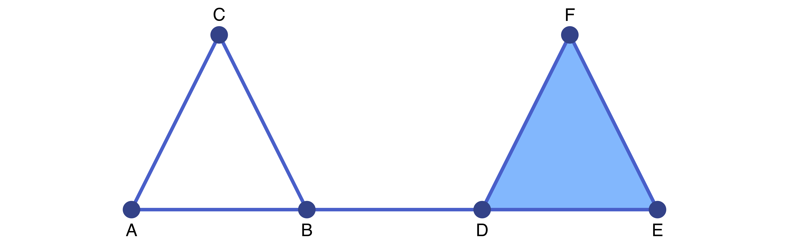

Homology
Conley's theory for the qualitative study of dynamical systems is based on fundamental concepts from algebraic topology. One of these is homology, which studies the topological properties of spaces using algebraic means. As part of ConleyDynamics.jl a number of homology methods are included. It should be noted that these algorithms are not meant for truly large-scale problems, but mostly for illustrative purposes. They are based on the persistence algorithm described in [EH10], and have been extended to work for arbitrary Lefschetz complexes over either the rationals or a finite field of prime order. For more serious applications one could use professional implementations such as Gudhi, see [GUD24].
Lefschetz Complex Homology
The most important notion of homology used in ConleyDynamics.jl is Lefschetz homology. It generalizes both simplicial homology as described in [Mun84], and cubical homology in the sense of [KMM04]. In order to fix our notation, we provide a brief introduction in the following. For more details, see [Lef42].
As we saw earlier, a Lefschetz complex $X$ is a collection of cells with associated nonnegative dimensions, together with a boundary map $\partial$ which is induced by the incidence coefficient map $\kappa$. The fundamental idea behind homology is to turn this underlying information into an algebraic form in such a way that the boundary map becomes a linear map. For this, define the $k$-th chain group as
\[ C_k(X) = \left\{ \sum_{i=1}^m \alpha_i \sigma_i \; : \; \alpha_1, \ldots, \alpha_m \in F \;\;\text{ and }\;\; \sigma_1, \ldots, \sigma_m \in X_k \right\} .\]
Since $X_k$ denotes the collection of all cells of dimension $k$, this definition can be rephrased by saying that $C_k(X)$ consists of all formal linear combinations of $k$-dimensional cells with coefficients in the underlying field $F$. It is not difficult to see that $C_k(X)$ is in fact a vector space over $F$. Moreover, its dimension is equal to the number of $k$-dimensional cells in $X$. The collection of all chain groups is $C(X) = (C_k(X))_{k \in {\mathbb Z}}$, where we let $C_k(X) = \{ 0 \}$ for all $k < 0$ and $k > \dim X$.
We now turn our attention to the boundary map. It was already explained how the incidence coefficient map $\kappa$ can be used to define the boundary $\partial \sigma \in C_{k-1}(X)$ for every $k$-dimensional cell $\sigma \in X_k$. If one further defines
\[ \partial \left( \sum_{i=1}^m \alpha_i \sigma_i \right) = \sum_{i=1}^m \alpha_i \partial\sigma_i \in C_{k-1}(X) \quad\text{ for }\quad \sum_{i=1}^m \alpha_i \sigma_i \in C_k(X) \; ,\]
then one obtains a map $\partial : C_k(X) \to C_{k-1}(X)$. It is not difficult to verify that this map is both well-defined and linear. Sometimes, we write $\partial_k$ instead of $\partial$ to emphasize that we consider the boundary map defined on the $k$-th chain group $C_k(X)$.
Altogether, the above definitions have equipped us with a sequence of vector spaces and maps between them in the form
\[ \ldots \stackrel{\partial_{k+2}}{\longrightarrow} C_{k+1}(X) \stackrel{\partial_{k+1}}{\longrightarrow} C_{k}(X) \stackrel{\partial_{k}}{\longrightarrow} C_{k-1}(X) \stackrel{\partial_{k-1}}{\longrightarrow} \ldots \stackrel{\partial_{1}}{\longrightarrow} C_0(X) \stackrel{\partial_{0}}{\longrightarrow} \{ 0 \} \stackrel{\partial_{-1}}{\longrightarrow} \ldots ,\]
and the properties of a Lefschetz complex further imply that
\[ \partial_k \circ \partial_{k+1} = 0 \quad\text{ for all }\quad k \in {\mathbb Z} .\]
In other words, the pair $(C(X), \partial)$ is a chain complex, which consists of a sequence of vector spaces over $F$ and linear maps between them. Recall from linear algebra that any linear map induces two important subspaces, which in the context of algebraic topology are given special names as follows:
- The elements of the subspace $Z_k(X) = \mathrm{ker}\; \partial_k$ are called the $k$-cycles of $X$.
- The elements of the subspace $B_k(X) = \mathrm{im}\; \partial_{k+1}$ are called the $k$-boundaries of $X$.
Both of these vector spaces are subspaces of the $k$-th chain group $C_k(X)$. Furthermore, in view of the above identity $\partial_k \circ \partial_{k+1} = 0$, one immediately obtains the subspace inclusion $B_k(X) \subset Z_k(X)$. We can therefore define the quotient space
\[ H_k(X) \; = \; Z_k(X) / B_k(X) \; = \; \mathrm{ker}\;\partial_k / \mathrm{im}\;\partial_{k+1} .\]
This vector space is called the $k$-th homology group of the Lefschetz complex $X$. It is again a vector space over $F$, and therefore its dimension provides important information. In view of this, the dimension of the $k$-th homology group $H_k(X)$ is called the $k$-th Betti number of $X$, and abbreviated as $\beta_k(X) = \dim H_k(X)$.
In order to shed some light on the actual meaning of homology, and in particular the Betti numbers, we turn to an example. Consider the simplicial complex sc that was already introduced in the Tutorial, and which can be created using the commands
labels = ["A","B","C","D","E","F"]
simplices = [["A","B"],["A","C"],["B","C"],["B","D"],["D","E","F"]]
sc = create_simplicial_complex(labels,simplices)This two-dimensional simplicial complex is shown in the figure.

For simplicity, we consider the associated Lefschetz complex $X$ over the field $F = GF(2)$. Then chains in a chain group are just a sum of individual cells of the same dimension.
In this simple example, one can determine the cycles and boundaries for $k=1$ directly. The vector space $Z_1(X)$ of $1$-cycles contains the two nonzero chains $c_1 = \mathrm{AB} + \mathrm{BC} + \mathrm{AC}$ and $c_2 = \mathrm{DE} + \mathrm{EF} + \mathrm{DF}$, since one can verify that $\partial c_1 = \partial c_2 = 0$. These are, however, not all nontrivial $1$-cycles, as their sum $c_1 + c_2$ is another one. Thus, the first cycle group is given by $Z_1(X) = \{ 0, c_1, c_2, c_1 + c_2 \}$. It is a vector space over $F = GF(2)$ of dimension two, and any two nonzero elements of $Z_1(X)$ form a basis. What about the $1$-boundaries? The simplicial complex $X$ contains only one $2$-cell, namely $\mathrm{DEF}$, and its boundary is given by the chain $c_2$. Thus, the first boundary group is given by $B_1(X) = \{ 0, c_2 \}$, which is a one-dimensional vector space over $F$.
Combined, one can show that the first homology group $H_1(X)$ consists of the two equivalence classes
\[ H_1(X) = \left\{ B_1(X) , \; c_1 + B_1(X) \right\} \; ,\]
where the class $B_1(X)$ is the zero element in $H_1(X)$. This implies that the first homology group is one-dimensional, and we have $\beta_1(X) = 1$. In some sense, the basis element of $H_1(X)$, which is the unique nonzero equivalence class given by $c_1 + B_1(X)$, is represented by the cycle $c_1$.
The above mathematically precise description can be summarized as follows. All three nontrivial cycles in $Z_1(X)$ have the potential to enclose two-dimensional holes in the simplicial complex $X$, since they are chains without boundary. However, some of these potential holes have been filled in by two-dimensional cells. Thus, while $c_1$ does indeed represent a hole, the chain $c_2$ does not, since its interior is filled in by $\mathrm{DEF}$. Note that the cycle $c_1 + c_2$ does not create a second hole, since we have $(c_1 + c_2) - c_1 = c_2 \in B_1(X)$. In other words, the first Betti number counts the number of independent holes in the complex $X$.
One can extend this discussion also to other dimensions and to general Lefschetz complexes $X$. In this way, one obtains the following informal interpretations of the Betti numbers:
- $\beta_0(X)$ counts the number of connected components of $X$,
- $\beta_1(X)$ counts the number of independent holes in $X$,
- $\beta_2(X)$ counts the number of independent cavities in $X$.
In general, one can show that $\beta_k(X)$ represents the number of independent $k$-dimensional holes in the Lefschetz complex $X$. For more details, see [Mun84].
The package ConleyDynamics.jl provides one function to compute standard homology:
homologyexpects one input argument, which has to be of the Lefschetz complex typeLefschetzComplex. It returns a vectorbettiof integers, whose length is one more than the dimension of the complex. The $k$-th Betti number $\beta_k(X)$ is returned inbetti[k+1].
We would like to point out that the field $F$ is implicit in the data structure for the Lefschetz complex $X$, and therefore it does not have to be specified. It can always be queried using the function lefschetz_field. For the above example one obtains
julia> homology(sc)
3-element Vector{Int64}:
1
1
0This clearly gives the correct Betti numbers, as we have already seen that this simplicial complex has one hole, and it is obviously connected.

The simplicial complex shown in the second figure can be created using the commands
labels2 = ["A","B","C","D","E","F","G","H"]
simplices2 = [["A","B"],["A","F"],["B","F"],["B","C","G"],["D","E","H"],["C","D"],["G","H"]]
sc2 = create_simplicial_complex(labels2,simplices2)and its homology can then be determined as follows:
julia> homology(sc2)
3-element Vector{Int64}:
1
2
0This complex is also connected, and therefore one has $\beta_0(X) = 1$. However, this time one obtains two independent holes, which results in $\beta_1(X) = 2$.

Similarly, the cubical complex depicted in the next figure can be generated via
cubes = ["00.11", "01.01", "02.10", "11.10", "11.01", "22.00", "20.11", "31.01"]
cc = create_cubical_complex(cubes)and its Betti numbers are given by
julia> homology(cc)
3-element Vector{Int64}:
2
1
0In this case, the complex has two components and one hole. As a final example, consider a simplicial complex which consists of the manifold boundary of a single cube. Such a complex can be generated using the commands
cc2,~ = create_cubical_box(1, 1, 1)
mbcells = manifold_boundary(cc2)
cc2bnd = lefschetz_subcomplex(cc2, mbcells)This time, the homology of the resulting cubical complex is given by the Betti numbers
julia> homology(cc2bnd)
3-element Vector{Int64}:
1
0
1This complex is connected and has no holes, but it does have one cavity. As shown, these observations translate into the Betti numbers $\beta_0(X) = 1$ and $\beta_1(X) = 0$, as well as $\beta_2(X) = 1$.
Beyond these simple illustrative examples, homology can be a useful tool in a variety of applied settings. For example, it can be used to quantify the evolution of material microstructures during phase separation processes, see for example [GMW05].
Relative Homology
For the definition of the Conley index of an isolated invariant set another notion of homology is essential, namely relative homology. For this, we assume that $X$ is a Lefschetz complex, and $Y \subset X$ is a closed subset. In other words, for every cell in $Y$, all of its faces are contained in $Y$ as well. Then relative homology defines a sequence of groups $H_k(X,Y)$ for $k \in \mathbb{Z}$ which basically measures the topological properties of $X$ if the subset $Y$ is contracted to a point and then forgotten.
This admittedly very vague definition can be made precise in a number of ways. Two of these can easily be described:
- We have already seen that any locally closed subset of a Lefschetz complex is again a Lefschetz complex. Since the subset $Y \subset X$ is closed, its complement $X \setminus Y$ is open, and hence locally closed as well. Thus, the complement $X \setminus Y$ is again a Lefschetz complex. It has been shown in [MB09, Theorem 3.5] that then
\[ H_k(X,Y) \cong H_k(X \setminus Y) \quad\text{ for all }\quad k \in \mathbb{Z} .\]
In other words, the relative homology of the pair $(X,Y)$ is just the regular homology of the Lefschetz complex given by the set $X \setminus Y$, with the incidence coefficient map inherited from $X$. - On a more topological level, one can also think of the relative homology of $(X,Y)$ in the following way. In the complex $X$, identify all cells in $Y$ to a single point, in the sense of the quotient space $X / Y$ defined in a standard topology course. Then one can show that
\[ H_k(X,Y) \cong \tilde{H}_k(X / Y) \quad\text{ for all }\quad k \in \mathbb{Z} ,\]
where $\tilde{H}_k(Z)$ denotes the reduced homology of a space $Z$. While the details of this latter notion of homology can be found in [Mun84, Section 7], for our purposes it suffices to note that the Betti numbers in reduced homology can be obtained from the ones in regular homology by decreasing the $0$-th Betti number by $1$, and keeping all other Betti numbers unchanged.
The precise mathematical definition of relative homology can be found in [Mun84, Section 9], and it is briefly introduced in the following. Since the $k$-th chain group of a Lefschetz complex consists of all formal linear combinations of $k$-dimensional cells, one can consider the vector space $C_k(Y)$ as a subspace of $C_k(X)$. Thus, it makes sense to form the quotient groups
\[ C_k(X,Y) = C_k(X) / C_k(Y)\]
as in linear algebra. Moreover, if one considers a class $[x] \in C_k(X,Y)$ represented by some $x \in C_k(X)$, then the definition
\[ \partial [x] = [\partial x] \in C_{k-1}(X, Y) \quad\text{ for }\quad [x] \in C_k(X, Y)\]
gives a well-defined linear map $\partial : C_k(X,Y) \to C_{k-1}(X,Y)$ which satisfies $\partial \circ \partial = 0$. In other words, the collection $(C_k(X,Y))_{k \in \mathbb{Z}}$ equipped with this boundary operator $\partial$ is a chain complex, and its associated homology groups $H_k(X,Y)$ are called the relative homology groups of the pair $(X,Y)$. Notice that by forming the quotient spaces $C_k(X) / C_k(Y)$, the chains in the subspace are all identified and set to zero, as mentioned earlier.
In ConleyDynamics.jl, relative homology can be computed using relative_homology. There are two possible ways to invoke this function:
- The method
relative_homology(lc::LefschetzComplex, subc::Cells)expects a Lefschetz complexlcwhich represents $X$, together with a list of cellssubc. The closure of this cell list determines the closed subcomplex $Y$. - The method
relative_homology(lc::LefschetzComplex, subc::Cells, subc0::Cells)expects an ambient Lefschetz complex specified by the argumentlc. The Lefschetz complex $X$ is then the closure of the cell listsubc, while the subcomplex $Y$ is given by the closure of the cell listsubc0. These closures are automatically computed by the function.
Both versions of relative_homology return the relative homology as a vector betti of Betti numbers, where betti[k] is the Betti number in dimension k-1. Notice also that the necessary cell list arguments have to be variables of the type Cells = Union{Vector{Int},Vector{String}}, i.e., they can be given in either label or index form.
In order to briefly illustrate the different usages of the command relative_homology, we consider again the simplicial complex shown in the figure, which can be generated using the commands
labels2 = ["A","B","C","D","E","F","G","H"]
simplices2 = [["A","B"],["A","F"],["B","F"],["B","C","G"],["D","E","H"],["C","D"],["G","H"]]
sc2 = create_simplicial_complex(labels2,simplices2)If we identify the vertices $\mathrm{A}$ and $\mathrm{E}$, then an additional loop is created along the bottom of the original simplicial complex. This leads to the following relative homology:
julia> relative_homology(sc2, ["A","E"])
3-element Vector{Int64}:
0
3
0Note that the $0$-th Betti number becomes zero, since these identified vertices are considered as zero in the chain group $C_0(X,Y)$. On the other hand, if we consider the boundary of the triangle $\mathrm{DEH}$ as the subcomplex $Y$, then one obtains:
julia> relative_homology(sc2, ["DE","DH","EH"])
3-element Vector{Int64}:
0
2
1Again, the $0$-th Betti number is reduced by one. But this time, the first Betti number does not change, as no new holes are created. Nevertheless, collapsing the boundary of the triangle to a point does create a cavity, and therefore the $2$-nd Betti number is now one. One can also just consider the closure of the triangle $\mathrm{BCG}$ as a Lefschetz complex $X$, and use its boundary as subcomplex $Y$. In this case we get:
julia> relative_homology(sc2, ["BCG"], ["BC","BG","CG"])
3-element Vector{Int64}:
0
0
1This is the reduced homology of a two-dimensional sphere, which is the topological space obtained from the quotient space $X / Y$. As our final example, consider the closed edge $\mathrm{AB}$ as Lefschetz complex $X$, and the vertex $\mathrm{B}$ as subcomplex $Y$, then the relative homology of the pair $(X,Y)$ is given by
julia> relative_homology(sc2, ["AB"], ["B"])
3-element Vector{Int64}:
0
0
0In this case, all Betti numbers are zero. This can also be seen by recalling that this relative homology is isomorphic to the relative homology of the two-element Lefschetz complex which consists only of the edge $\mathrm{AB}$ and the vertex $\mathrm{A}$:
julia> homology(lefschetz_subcomplex(sc2, ["A","AB"]))
2-element Vector{Int64}:
0
0Note that one obtains a Betti number vector of length two, since this subcomplex has dimension one.
Persistent Homology
Even though the notion of persistence is not strictly necessary for the study of combinatorial topological dynamics, the package ConleyDynamics.jl provides rudimentary support for the computation of persistence intervals for filtrations of Lefschetz complexes. A detailed introduction to persistence can be found in the book [EH10], and we briefly provide an intuitive definition and some examples below.
Persistent homology is concerned with the creation and destruction of topological features in a sequence of nested Lefschetz complexes. More precisely, consider the sequence of Lefschetz complexes
\[ X^{(1)} \subset X^{(2)} \subset \ldots \subset X^{(n)} ,\]
where we assume that $X^{(k)}$ is closed in $X^{(n)}$ for all $1 \le k < n$. This is called a filtration of Lefschetz complexes. As we have seen above, every one of the complexes $X^{(k)}$ has associated homology groups, and the notion of persistence is concerned with how these groups change as $k$ is increased from $1$ to $n$. More precisely, this is based on the following intuition:
- For $k = 1$, the Betti numbers of the Lefschetz complex $X^{(1)}$ describe how many nontrivial holes the complex has in each dimension. Each of these holes is represented by a cycle which generates the associated homology class. One then says that each of these homology classes is born at $k=1$.
- As one passes from the complex $X^{(k)}$ to the complex $X^{(k+1)}$, for $k = 1,\ldots,n-1,$ these Betti numbers can change in a number of ways:
- A new homology class is created in $X^{(k+1)}$, which leads to an increase in the corresponding Betti number. As before, this means that a new homology class is born at level $k+1$.
- A homology class that was present in $X^{(k)}$ is no longer present in $X^{(k+1)}$. On the one hand, this could be the result of the merging of two separate topological features, such as for example two separate connected components of the complex $X^{(k)}$ which become one connected component in $X^{(k+1)}$. On the other hand, the corresponding hole in the complex could have been filled in through the introduction of cells in the set difference $X^{(k+1)} \setminus X^{(k)}$. In either case, we say that the homology class died at level $k+1$.
- The persistent homology associated with this filtration then consists of a collection of persistence intervals for each dimension. All of these intervals are of the form $[b,d)$, where $b$ denotes the birth time and $d$ the death time of a topological feature. Note that some homology classes might still be present in the homology of the final Lefschetz complex $X^{(n)},$ and in this case one obtains an interval of the form $[b,\infty)$, i.e., the feature never dies.
With the above intuitive description one usually can work out the collection of persistence intervals for small and simple examples. There is, however, one final ambiguity that has to be resolved. Suppose that two topological features are born at times $b_1$ and $b_2$, and they merge to a single feature at time $d$. Which of these survives into the next complex, and which dies? In this situation, the elder rule applies, which says that the older feature persists. Thus, if $b_1 \ge b_2$, then one obtains the persistence interval $[b_1,d)$, while the death time $e$ in the interval $[b_2,e)$ will be determined by a later level, i.e., we have $e > d$.
In order to illustrate this informal definition, we consider the filtration given by the four simplicial complexes shown in the figures. All of these are subcomplexes of, and the last one is equal to, one of our earlier examples.
In this simple example, the persistence intervals in each dimension can be determined easily:
- Dimension 0: The first complex has one connected component. A second component, namely the vertex $\mathrm{H}$, is added in $X^{(2)}$. Both of these components merge in $X^{(3)}$, and no additional components are created. In view of the elder rule, this gives the two persistence intervals $[1,\infty)$ and $[2,3)$.
- Dimension 1: The first hole is created in $X^{(2)},$ given by the cycle $\mathrm{AB} + \mathrm{AF} + \mathrm{BF}$. Moreover, in $X^{(3)}$ the hole determined by the chain $\mathrm{DE} + \mathrm{DH} + \mathrm{EH}$ is added to the mix. Finally, in $X^{(4)}$ the latter hole is removed through filling in the triangle $\mathrm{DEH}$, while the hole bounded by the cycle $\mathrm{CD} + \mathrm{DH} + \mathrm{CG} + \mathrm{GH}$ is created. This gives the unbounded persistence intervals $[2,\infty)$ and $[4,\infty)$, as well as the bounded one $[3,4)$.
- Dimension 2: None of the complexes form any cavities, and therefore there are no persistence intervals in dimension two.
In ConleyDynamics.jl, there are two functions that provide basic persistence functionality:
- The function
persistent_homologycomputes the persistence intervals, and it is usually invoked using the commandpinf, ppairs = persistent_homology(lc, filtration). It expects two arguments: The first is an underlying Lefschetz complexlcof typeLefschetzComplex, which has to be the complex $X^{(n)}$ in the above notation. The second argumentfiltrationis of typeVector{Int}and has to have lengthlc.ncells. For each cell index, it contains the integer level $k$ of the the first complex $X^{(k)}$ in which the cell appears. The function returns two vectors,pinfandppairs, each of which have length1 + lc.dim, and which contain the following information:pinf[k]contains a vector of birth times for all unbounded persistence intervals in dimension $k-1$. It is an empty vector if no such intervals exist.ppairs[k]contains a vector of pairs(b,d)for each of the bounded persistence interval $[b,d)$ in dimension $k-1$. Again, this vector is empty if no such intervals exist.
filtrationhas to contain every integer between $1$ and $n$ at least once, and only these integers. An error is raised if this is not the case, or if the resulting subcomplexes $X^{(k)}$ are not closed. - The function
lefschetz_filtrationis meant to simplify the construction of the argumentfiltration, especially in the situation that $X^{(n)}$ is a proper subcomplex of some ambient Lefschetz complex $X$. The function is invoked using the formlcsub, filtration = lefschetz_filtration(lc, partialfil). The argumentlccontains the Lefschetz complex $X$. The argumentpartialfilhas the typeVector{Int}and is of lengthlc.ncells. For each cell indexjit contains an integerpartialfil[j]between $0$ and $n$. If the cell appears first in complex $X^{(k)}$, thenpartialfil[j] = k. This time, however, not all cells have to be specified, since the function automatically computes the complex closure at every level. Clearly, this means that the final complex is the closure of all cells with positivepartialfil-values, and this can be a proper subcomplex oflc. The function therefore returns this subcomplexlcsub, together with a filtrationfiltrationwhich satisfies the requirements of the functionpersistent_homology.
We close this section with two examples illustrating these functions. As first example, we consider the filtration given above, which consists of four simplicial complexes. In this case the persistence can be computed using the commands:
labels = ["A","B","C","D","E","F","G","H"]
simplices = [["A","B"],["A","F"],["B","F"],["B","C","G"],["D","E","H"],["C","D"],["G","H"]]
sc = create_simplicial_complex(labels,simplices)
filtration = [1,1,1,1,1,2,1,2,
1,2,1,2,1,1,1,1,3,3,4,
1,4]
pinf, ppairs = persistent_homology(sc, filtration)The first three lines establish the simplicial complex $X^{(4)}$, while the next command defines the filtration. For easier reading, we used different lines for the cells of each dimension. Finally, the last command computes the persistence intervals. The unbounded ones have the birth times
julia> pinf
3-element Vector{Vector{Int64}}:
[1]
[2, 4]
[]while the bounded ones are given by
julia> ppairs
3-element Vector{Vector{Tuple{Int64, Int64}}}:
[(2, 3)]
[(3, 4)]
[]This is in accordance with our earlier observations. Notice also that the Betti numbers of the final complex $X^{(4)}$ in the filtration can easily be determined via
julia> length.(pinf)
3-element Vector{Int64}:
1
2
0With the second example we illustrate the use of the function lefschetz_filtration. For this, suppose that the ambient Lefschetz complex $X$ is the final simplicial complex in the filtration of the previous example. Within this complex, we consider the following new filtration:
- The complex $X^{(1)}$ is the closure of $\{ \mathrm{CD}, \mathrm{GH} \}.$
- The complex $X^{(2)}$ is the closure of $X^{(1)} \cup \{ \mathrm{BC}, \mathrm{BG}, \mathrm{DEH} \}.$
- The complex $X^{(3)}$ is the closure of $X^{(2)} \cup \{ \mathrm{BCG} \}.$
The persistent intervals of this filtration can be determined using the following commands:
labels = ["A","B","C","D","E","F","G","H"]
simplices = [["A","B"],["A","F"],["B","F"],["B","C","G"],["D","E","H"],["C","D"],["G","H"]]
sc = create_simplicial_complex(labels,simplices)
tmpfil = fill(Int(0),sc.ncells)
tmpfil[sc.indices["CD"]] = 1
tmpfil[sc.indices["GH"]] = 1
tmpfil[sc.indices["BC"]] = 2
tmpfil[sc.indices["BG"]] = 2
tmpfil[sc.indices["DEH"]] = 2
tmpfil[sc.indices["BCG"]] = 3
scsub, filtration = lefschetz_filtration(sc, tmpfil)
psinf, pspairs = persistent_homology(scsub, filtration)The unbounded persistence intervals have birth times
julia> psinf
3-element Vector{Vector{Int64}}:
[1]
[2]
[]while the bounded persistence intervals are
julia> pspairs
3-element Vector{Vector{Tuple{Int64, Int64}}}:
[(1, 2)]
[]
[]Their correctness can immediately be established.
As we mentioned earlier, more information on persistence can be found in [EH10], which also contains a detailed discussion of the implemented persistence algorithm in the context of simplicial complexes. Further examples of persistence computations for general Lefschetz complexes are given in [DW18].
References
See the full bibliography for a complete list of references cited throughout this documentation. This section cites the following references:
- [DW18]
- P. Dłotko and T. Wanner. Rigorous cubical approximation and persistent homology of continuous functions. Computers & Mathematics with Applications 75, 1648–1666 (2018).
- [EH10]
- H. Edelsbrunner and J. L. Harer. Computational Topology (American Mathematical Society, Providence, 2010).
- [GMW05]
- M. Gameiro, K. Mischaikow and T. Wanner. Evolution of pattern complexity in the Cahn-Hilliard theory of phase separation. Acta Materialia 53, 693–704 (2005).
- [KMM04]
- T. Kaczynski, K. Mischaikow and M. Mrozek. Computational Homology. Vol. 157 of Applied Mathematical Sciences (Springer-Verlag, New York, 2004).
- [Lef42]
- S. Lefschetz. Algebraic Topology. Vol. 27 of American Mathematical Society Colloquium Publications (American Mathematical Society, New York, 1942).
- [MB09]
- M. Mrozek and B. Batko. Coreduction homology algorithm. Discrete & Computational Geometry 41, 96–118 (2009).
- [Mun84]
- J. R. Munkres. Elements of Algebraic Topology. SpringerBriefs in Mathematics (Addison-Wesley, Menlo Park, 1984).
- [GUD24]
- GUDHI Project. GUDHI User and Reference Manual. 3.10.1 Edition (GUDHI Editorial Board, 2024).